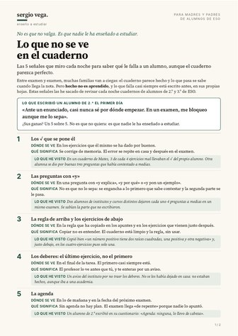
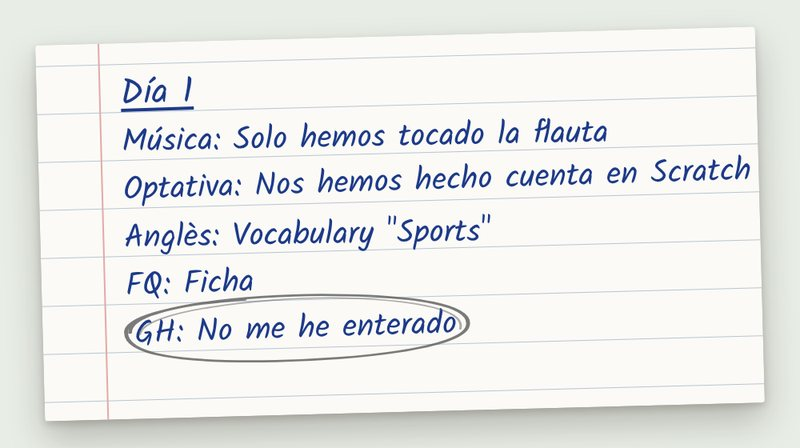

Para madres y padres con un hijo en la ESO
Te dice que ha hecho los deberes. Y es verdad. Entonces, ¿por qué la nota no cuadra?
Porque hecho no es aprendido. Lo que no ha aprendido está en su cuaderno semanas antes del examen, y se puede ver. Te doy las 5 señales que miro cada noche para verlo. Sin estar encima de él. Gratis.

Lo que no se ve en el cuadernoGuía de 2 páginas en PDF, con versión para imprimir. Te llega al momento.
Hecho. Mira tu correo.
Te acabo de mandar la guía por email. Te llega en un minuto, de Sergio Vega.
Si en 2 minutos no lo ves, mira en Promociones o en Spam y arrástralo a la bandeja principal. Así te llegan bien los siguientes.
Sin llamadas. Sin compromiso. Te das de baja con un clic.
Si te pasa algo de esto, la guía es para ti
- No quieres estar encima de él. Pero tampoco quieres enterarte con la nota.
- Cada tarde, la misma pregunta: «¿has hecho los deberes?». Y muchas veces, la misma discusión.
- Intentas ayudarle y ya no te acuerdas de cómo se hacía. O sí te acuerdas, y acabáis peor.
- Pagas una academia y aun así algo no encaja.
- Dice que se lo sabía. Y en el examen no lo puso.
Mira.
Tengo tres hijos. La pregunta de cada tarde, «¿has hecho los deberes?», la conozco bien.
Y soy químico. Trabajo en la industria y tengo una patente europea a mi nombre. Mi oficio es encontrar por qué falla algo antes de que falle. Con los cuadernos hago lo mismo.
Cada noche reviso cuadernos de alumnos de ESO, uno a uno. Esto es lo que me he encontrado. Son casos reales.
Un cuaderno de Mates. Todo hecho. Limpio. Cada ejercicio con su ✓. Los comprobé.
De cada 4 ejercicios que estaban mal, 3 llevaban el ✓ del propio alumno.
No mentía. Se corregía de memoria, y de memoria todo parece bien.
Otro cuaderno. La regla, copiada perfecta: «un número positivo tiene dos raíces cuadradas, una positiva y otra negativa». Justo debajo, en los cuatro ejercicios, solo una raíz.
Otro caso. Aviso del instituto por no llevar los deberes. No se los había dejado en casa: no estaban hechos. Y eso que iba a una academia.
Y dos alumnos de institutos y cursos distintos, sin ninguna relación entre ellos, dejaron cada uno 4 preguntas a medias en su examen. Se sabían la parte que no escribieron.
El primer día les paso un cuestionario. Un alumno de 2.º escribió: «Ante un enunciado, casi nunca sé por dónde empezar». Y del examen: «Me bloqueo aunque me lo sepa». Una alumna de 3.º, de Física y Química: «No entiendo las explicaciones, me pierdo desde hace tiempo». Ninguno escribió «no quiero». Los dos marcaron sus ganas con un 5 sobre 5.
Y el que más me enseñó me lo dijo él mismo. Le pedí a un alumno que cada noche escribiera tres líneas: qué habíamos dado, una cosa que sí le había quedado y una que no. La primera noche, la última línea fue esta:

Su cuaderno no lo decía. Lo dijo él, porque tenía el sitio para decirlo.
Ninguno de estos cuadernos parecía un problema. Si los miras como los mira casi todo el mundo, miras si está hecho. Y estaba hecho.
Lo que falla no se ve ahí. Se ve sabiendo dónde mirar. Por eso he escrito esta guía.
Las 5 cosas que miro en un cuaderno
No miro «si ha estudiado». Miro 5 cosas concretas. Son las que me dicen, antes del examen, qué hay que arreglar.
1Los ✓ que se pone él
Se corrige de memoria, y de memoria todo parece bien. El error se repite en casa y después en el examen.
En un cuaderno de Mates, 3 de cada 4 ejercicios mal llevaban el ✓ del propio alumno.
2Las preguntas con «y»
«Y explica», «y por qué», «y pon un ejemplo». No es que no lo sepa: se engancha a lo primero que sabe contestar y la segunda parte se le pasa.
3La regla de arriba y los ejercicios de abajo
Copiar no es entender. El cuaderno puede estar impecable y la regla, sin usar.
4Los deberes: el último ejercicio, no el primero
El primero casi siempre está. El último te dice si están hechos o solo empezados.
5La agenda
Si está apuntado lo de mañana y la fecha del próximo examen. Sin agenda no hay plan posible: el examen llega «de repente».
Un alumno de 2.º escribió en su cuestionario: «Agenda: ninguna, lo llevo de cabeza».
En la guía tienes además cómo lo trabajo yo cada día con mis alumnos para que no se descuelguen.
Que no se descuelgue
Lo que hoy no entiende, lo trabajamos mañana.
Un alumno no suspende el día del examen. Se va descolgando: un día no entiende algo, al siguiente la clase se apoya en eso y a las tres semanas ya no sigue nada. Ahí deja de participar y deja de querer. Mi trabajo es cortar eso el primer día. Deberes, hábito y aprender a estudiar no son tres cosas distintas: es un solo método, cada tarde de lunes a viernes.
- Cada tarde · La fotoMe manda una foto de la agenda, de los deberes y de sus tres líneas, escritas sin mirar nada: 1. Qué hemos dado hoy. 2. Una cosa que sí me ha quedado. 3. Una que no.
- Esa noche · El huecoLo miro yo, uno a uno. Si los deberes están hechos, y bien. Las 5 señales de la guía. Y sobre todo, la línea de lo que no le ha quedado: ahí está el hueco, aunque el cuaderno parezca perfecto. Muchas veces ni él sabría decirte qué es. Sus dudas, detectadas esa misma noche.
- Al día siguiente · ResueltoLo que no le ha quedado lo trabaja con algo hecho solo para él, a partir de su propio error. Siempre empezando por para qué sirve eso: cuando entiende el porqué, el resto le cuesta mucho menos. Un caso real. Una noche escribió «GH: No me he enterado». Su cuaderno no lo decía. Al día siguiente ya lo estábamos trabajando.
- En clase · Lo sigueComo lo de ayer ya lo tiene, sigue la explicación de hoy y puede participar. No se descuelga.
- A los 2 días y a la semana · El repasoVuelve sobre lo que no le quedó, primero sin mirar. Cuando hay examen, el plan lo hago yo con su temario y sus fallos. Y las dudas que lo necesiten, resueltas y explicadas por videollamada antes del examen.
- Y mientras tanto · Aprende a estudiarEn concreto, aprende: · A saber para qué sirve lo que estudia en cada materia, y hacerlo suyo. Con el porqué, el qué cuesta menos. · A preguntarse sin mirar, en vez de releer. · A contar cuántas cosas pide cada pregunta antes de contestar. · A comprobar sus ✓ con las soluciones, en vez de darse por bueno. · A repasar a los 2 días y a la semana, no la víspera. · A prepararse un examen: una cosa cada día, un examen de prueba dos días antes y, la víspera, nada nuevo. Y la ayuda se va retirando: cada vez le doy menos hecho y le pido más a él, hasta que aprende a detectar y resolver sus huecos solo. Le preparo para que él solo sea capaz de afrontar lo que venga. Cuando está listo, te lo digo y mi trabajo termina. Y si después me necesitáis, aquí sigo.
Por qué las tres líneas. A él le enseñan a estudiar: recordar sin mirar es lo que fija lo aprendido. A la semana, quien lo hace recuerda un 61 %; quien relee, un 40 %. Y casi nadie lo hace solo: en una universidad muy exigente, solo 1 de cada 10 alumnos se preguntaba a sí mismo. Los dos primeros alumnos con los que empecé estudiaban así: uno releyendo los apuntes; la otra, subrayando y haciendo resúmenes. Y a mí me dan el mapa: cada día sé, materia por materia, qué no le ha quedado. No la víspera del examen: ese mismo día. Es su diario de estudio, y nos sirve a los dos.
Y por qué el porqué. Cuando un alumno ve para qué le sirve lo que está estudiando, se interesa más y saca mejores notas, sobre todo el que peor iba. Por eso, en cada materia, primero el para qué. Si sabe por qué lo estudia y lo hace suyo, ya no hace falta empujarle.
Roediger y Karpicke (2006), Psychological Science 17(3). Karpicke, Butler y Roediger (2009), Memory 17(4). Nückles, Hübner y Renkl (2009), Learning and Instruction 19(3). Hulleman y Harackiewicz (2009), Science 326. Wood, Bruner y Ross (1976), Journal of Child Psychology and Psychiatry 17(2).
En pedagogía esto se llama andamiaje: ayuda justa en el punto exacto donde se atasca, que se quita cuando ya puede solo. No es una clase particular más: cada día el hueco se cierra antes de que se haga grande. Eso es enseñar a estudiar.
No tienes que sentarte a su lado
Una revisión de 50 estudios con alumnos de 11 a 14 años encontró que, de todo lo que hacen los padres, sentarse a hacer los deberes con su hijo es lo que menos se asocia con mejores notas. Hablar con él de para qué sirve estudiar, lo que más.
Y mirar no es vigilar. Lo que ayuda no es cuánto te implicas, sino cómo: sin reñir, sin corregir, sin estar encima.
Por eso la guía no te convierte en el policía de los deberes. Te dice dónde mirar. Y si un día decides que alguien le acompañe cada tarde, ese puedo ser yo. Tú, las conversaciones. Yo, enseñarle a estudiar.
Hill y Tyson (2009), Developmental Psychology 45(3). Pomerantz, Moorman y Litwack (2007), Review of Educational Research 77(3).
¿Lo miras esta noche? Te la mando ahora.
Mándame la guía →Qué pasa exactamente, día a día
- Hoy · 20 segundosEliges el curso y me dejas tu email.
- Al momentoTe llega la guía por email: 2 páginas, y otra versión para imprimir.
- Días 2, 3, 4, 5 y 7Te llega un email corto cada uno de esos días. Por qué se dejan preguntas a medias sabiéndoselas. Por qué no se arregla estudiando la víspera. Por qué no tienes que ser tú quien se siente con él. Una propuesta. Y una despedida.
Cuando pregunté a un padre qué le había funcionado otros años, no me dijo «más horas». Me dijo: «la atención personalizada para repasar lo que no entendía». Eso es exactamente lo que hago, cada día.
Pruébalo una semana, gratis
En el email del día 5 te propongo una semana de diagnóstico. Es exactamente esto:
- Antes de empezarTú y tu hijo rellenáis un cuestionario corto cada uno. Hablamos 20 minutos por videollamada los tres. Y firmamos un compromiso entre los tres, de una página: él pone la hora y el sitio; yo, la revisión de cada noche; y tú, solo una cosa: cinco minutos el viernes para hablar con él de para qué le sirve lo que ha aprendido.
- De lunes a viernesEl método de arriba, completo: la foto con sus tres líneas, mi revisión esa noche y lo que no ha entendido, trabajado al día siguiente con algo hecho para él.
- El viernesTe mando un informe: qué hace bien, qué le falla, con la foto donde se ve y en qué orden lo arreglaría. Después hablamos 20 minutos.
Lo que no hago
- No hablo a solas con tu hijo: el grupo es siempre contigo dentro.
- Solo fotos de papel. Nunca caras.
- No prometo notas. Te cuento lo que veo, con la foto delante.
Y si después seguís, esto es lo que incluye
- Una sesión de diagnóstico de 45 minutos por videollamada al empezar, para ver cómo estudia y cómo piensa cuando nadie le ayuda.
- Cada día, de lunes a viernes: su foto cada tarde (agenda, deberes y tres líneas). Lo que no ha entendido, trabajado al día siguiente con material hecho para él, a partir de su propio error.
- Sus dudas, detectadas esa misma noche. Me las escribe con la foto o salen en sus tres líneas, y esa noche ya sé qué hay que trabajar.
- Cuando hay examen, el plan lo hago yo, con su temario y sus fallos. Y las dudas que lo necesiten, resueltas y explicadas por videollamada.
- Para ti: un parte de tres líneas cada viernes, un informe con llamada a las 4 semanas y un informe cada trimestre.
- Un compromiso entre los tres. Él pone la hora y el sitio. Yo, la revisión de cada noche. Tú, cinco minutos el viernes para hablar con él de para qué le sirve lo que ha aprendido. Nada más: no tienes que corregir ni explicar.
Las videollamadas con tu hijo, siempre con uno de vosotros en casa.
Cojo 3 familias a la vez, porque cada informe lo hago a mano. Si no te interesa, te dejo en paz y te quedas con la guía, que sirve todo el curso.
Ese es el trato.
¿Cuánto cuesta? Cero.
La guía es gratis y lo será siempre. No te pido tarjeta ni teléfono. Y no te va a llamar nadie si tú no me lo pides.
Lo que te estarás preguntando
¿Me sirve si yo no sé de mates?
Sí. No tienes que corregir ni explicar nada. Las 5 señales se entienden sin saber la materia, y el trabajo de cada día lo hago yo.
¿Para qué cursos es?
De 1.º a 4.º de ESO. Los ejemplos salen de cuadernos de 2.º y 3.º.
¿Tengo que estar encima de él?
No. Él me manda una foto cada tarde y la revisión la hago yo. Tú, las conversaciones: no corriges, no explicas y no hay bronca.
¿Qué datos de mi hijo me vas a pedir?
Ninguno. Solo el curso, para que lo que te escriba encaje con su edad.
¿Y no acabará dependiendo de ti?
Es justo lo que intento evitar desde el primer día. Las tres líneas las escribe él, y todo lo que hacemos es para que aprenda a hacerlo solo. Cuando esté listo, te lo diré. Y si después me necesitáis, aquí sigo.
¿Quién eres?
Sergio Vega. Padre de tres. Químico en activo en la industria, con una patente europea a mi nombre, y con el Máster de Profesorado de Secundaria. Cada noche reviso cuadernos de alumnos de ESO. Todo lo que hay en la guía sale de ahí, contado sin nada que identifique a nadie.
Mándame la guía →